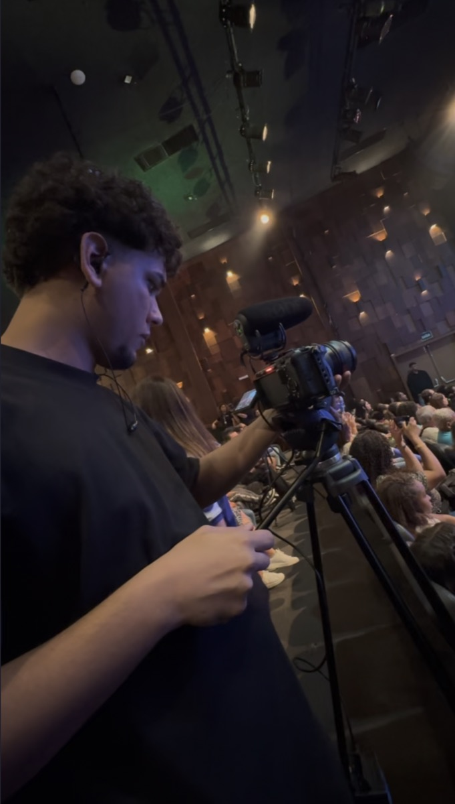

Filmmaker em Natal/RN
Direção, captação e edição.
Marcas, artistas e eventos.
Trabalhos
Clique para assistir.
Conteúdo vertical
Formatos 9:16 para Reels, Shorts e campanhas mobile.
Em breve
Em breve
Novo projeto
Em breve
Em breve
Novo projeto
Em breve
Em breve
Novo projeto

Gravo e edito eu mesmo.
Meu nome é Sidy Furtado. Sou filmmaker e moro em Natal.
Faço direção, câmera e montagem. Fazer as três coisas ajuda: o que eu decido na gravação já sabe onde vai cair na edição, e se faltou alguma imagem eu percebo ainda no set.
Já filmei documentário de esporte, campanha para marca e aftermovie de show. Em todos, o que mais pesa é o ritmo do corte.
- Função
- Direção, câmera e montagem
- Formatos
- Aftermovie, documentário, campanha e vertical
- Base
- Natal / RN